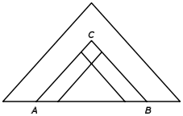

Беседа 2108 от 3877 · Беинса Дуно
Най-малкият опит
Сряда, 5 часа сутринта
Добрата молитва
Размишление върху Царството Божие
Ще прочета 6 глава от Галатяном.
Духът Божи
Истината трябва да стане ясна на човека. Има едно вътрешно неразбиране. Хората започват добре и после се спъват. Всеки от вас може да говори за въздуха, за светлината, за водата, но това са външни страни на човека. Човек трябва да знае как да използува въздуха, водата и светлината. Това е изкуство.

Много хора носят триъгълници кръстове и пр. Те все си имат своето специфично значение. Ти можеш да носиш един триъгълник, без да имаш качествата на триъгълник. Ако един триъгълник не е направен от силите на твоя ум, на твоето сърце и на твоята воля, този триъгълник не може да ти бъде полезен. Значи, за един триъгълник има по три допирни точки. Добре. Но представете си, че теглим една успоредна линия и друга успоредна линия. Представете си такова положение. Какво става с триъгълника? Представете си, че това представлява един дом. Най-първо бащата и неговата другарка са живяли много добре. Имали са достатъчно деца, 4–5 деца. Те израстват. Тогава този триъгълник, това место, което е било благоприятно за бащата и другарката му, става ви тясно. Започва се спор. Понеже хората се увеличават, а земята не се увеличава, явяват се стеснителни условия. Но представете си, да допуснем, че този триъгълник има възможността да се увеличава и да се смалява. Ако той се смалява, смалява, ще дойде до едно место и какво ще стане? Той вече не ще може да се смалява и ще спре смаляването. Същото е и при увеличаването. Колкото и да се увеличава, пак ще дойде до едно место и ще спре.
Чета във вестниците за най-високия човек в света. Един турчин е имал 2 и 80 метра височина. Той дал във вестниците обявление, че иска да си намери една другарка. И казва, че всички хора са го избягвали, даже и неговите роднини, понеже той само за закуска изяждал едно пиле, а пък на обед едно агне. И казва каква трябва да бъде другарката му. Тя трябва да знае да готви за един такъв човек. Ако имате ръст 2.80 метра, какво ще бъде вашето положение?
Също, какво ще бъде вашето положение, ако човек има едно желание анормално? Много пъти известни наши желания са анормални. При дадените условия, нашите мисли, чувствувания, постъпки, трябва да имат една норма. За пример, често у вас се заражда желание да критикувате. В каквото и общество да се намерят хората, все се критикуват. Двама художници могат да се критикуват; двама лекари – също; двама свещеника – също се критикуват; две домакини; две слугини; двама ученика и т.н., всички се критикуват. Това си има своята подбудителна причина. Не е лошо да критикувате някого, но да знаеш как да го поправиш.
За пример, аз съм привеждал онзи пример, за онзи млад българин, който намерил най-лесния занаят, занаят – абаджилък. Като работил една седмица при своя господар, господарят му дал ножици, конци и аба да работи. Дошъл един бей и го видял доста угледен. Момчето изважда един топ и започва да му крои бирбочуклия гащи. Това става в къщата на бея, дето момчето било поканено. Гледа го беят, как то крои и казал: „Както гледам и както скрои не става на бирбочуклии гащи, но поне една салтамарка ми скрои.“ Но това, което момчето скроило и на салтамарка не ставало. Беят му казал: „Поне една тютюнева кесия ми направи. И ако и нея не ми направиш, ще те набия.“ Та често в новия живот, като кроите, гледам и гащите и салтамарката са погрешно скроени.
Някои казват: „Онзи човек не живее по любов.“ Че онзи, който казва така, той никак не знае какво нещо е Любовта. Някой казва: „Онзи човек не е щедър.“ Че и този, който казва така и той не е щедър. Някой казва: „Онзи човек не се носи добре.“ Че и този, който казва така и той не се носи добре.
Най-първо ние имаме отношение към Бога, към Онзи, Който ни е кредитирал. Ние имаме едно отношение към природата. Какви трябва да бъдат твоите отношения? Не само да кажеш: „Аз не живея добре.“ Но в какво именно не живееш добре? Да кажем, че една мисъл е излязла от твоята глава. Тази мисъл или ви освобождава или ви ограничава. Може никой да не я знае. Но пак тя ви освобождава или ограничава. Ти можеш да кажеш: „Аз мога да мисля каквото искам.“ То е все едно да кажеш: „Аз мога да взема пари на заем.“ Можеш, но ще дойде време, когато после не ще можеш да вземеш пари на заем. Днес по любов, утре по любов и ще дойде време, ще видиш, че любовта не върви. И ще се намери един дълг. Също така и всяко едно чувство, което се е появило във вас, или ще ви освободи или ще ви ограничи. Това се отнася и до всяка постъпка. Безразлично дали я виждат хората или не.
Да кажем, че сте недоволни от условията вън. Да кажем, че сте недоволни от къщата си, че е малка, недоволни сте от вашия добитък, че имате само два вола и едно рало. Недоволни сте от коня си, от дрехите си, от каруцата си. Някои хора има богати, но и те са недоволни. Един цар и той е недоволен. Има други царе с повече земя, по-добре икономически и пр. Някои царе са икономически закъсали. Също и някои търговци. Всички вие сте женени. Всички сте женени по любов. И няма никой от вас, който да не се е женил по любов. И няма никой от вас, който да не е плакал за онзи, за когото се е оженил. Аз вземам нещата така, както са си. Вие, като се ожените, кои са причините, които развалят любовта, развалят хармонията? Да кажем, че жената казва на мъжа си: „Ще си переш дрехите сам!“ И тя му остави чорапите му скъсани, ризата незашита и каже: „Аз съм свободна! Ти ще се грижиш за себе си.“ Да допуснем, че и мъжът каже на жена си: „Ти ще се грижиш за себе си.“ Какво ще стане тогава? Ако трябваше всеки да се грижи само за себе си, тогава защо се жените? Коя беше причината да се жените? Значи имате някоя нужда. Ти казваш: „Аз без този не мога да живея.“ Хубаво. Но защо сега не искаш да му переш ризата? Намерите някой мъж и казвате: „Без него не мога да живея.“ Но след като се ожените, виждате, че има и друг Господ и хвърлите око на него. И казвате: „Той е по-силен, по-богат, по-здрав.“ После намерите трети Господ, четвърти Господ и пр. И край нямат тези божества. Така се е родило многобожието.
Всякога хората представят по-силните същества като Господ. Но те не разбират под Господ – Бог, но някой силен човек, който може да им помага. Това е едновременно атавизъм в нашият живот. Вие не можете да се освободите от робството, което имате. Малко сестри и братя съм срещал, които са свободни. Някой казва: „Аз станах светец.“ Тези негови думи показват, че зад това има нещо лошо. Или някой станал много богат. Зад това има нещо лошо.
Бащата казва за сина си: „Той тръгнал по един крив път.“ Че, едно време бащата и той беше тръгнал по момите. Или майката казва за дъщеря си, че тръгнала по момците. Че и самата тя по-рано, не вървеше ли по момците? Невъзможно е синът или дъщерята да тръгнат по един път, по който бащата и майката не са тръгнали и не са вървяли. Бащата да каже на сина си: „Едно време аз вървях само подир една мома, а пък ти всичките си взел на око и никой на тебе не може да разчита.“ Синът дал обещание на една мома, че ще се ожени за нея. Дал същото обещание и на друга мома и т.н. А според сегашните закони, за 10 моми не може да се жени, защото иначе ще отиде в дрънголника. Американското правителство преследва мормоните, че имат своего рода учение. У тях историята е установила многоженството. Това е един атавизъм. В природата многоженството и многомъжеството не съществува по принцип. Многоженството се е явило при известни условия. Също така и многомъжеството. Но те са дошли отпосле. Бог изисква да имате едно такова отношение един към друг, каквото Той има към нас. В един дом бащата би желал да имат всички такова отношение един към друг, както той има към тях. Един син в домът трябва да постъпва така, както постъпва бащата и една дъщеря трябва да постъпва така, както постъпва майката.
Вие трябва да развиете дарбите в себе си. По някой път, вие вървите по обратния път. Вашият триъгълник се смалява. То и в смаляването има добра страна и в увеличаването, но при известни условия. Материално или физически мо[же] да се смалява триъгълникът ви. Вашият триъгълник може да се смалява в материално отношение, или в духовно отношение или в умствено отношение, или пък може да се отдалечава в едно от тези отношения.
Колко години вие следвате по този път? И майките и бащите ви са следвали в този религиозен път. Но баща ви получил ли е едно писмо от невидимия свят през живота си и за вас. Пощата донесла ли ви е едно писмо от Невидимия свят? Помнете едно нещо: Не може Господ да ви говори и да останете същия човек. Ако Господ ви е говорил и вие останете същия, това е само едно отражение. Някой е взел ролята на Господ и е говорил. Но не може Господ да ви говори и вие да останете същия. Ако веднъж ви е проговорил Бог на ума ви, на сърдцето ви, във вас ще стане цял един преврат, но не временно.
И сега стават преврати, но изчезват. Вие имате едно въодушевление, готов сте да направите нещо хубаво, но след 4–5 години казвате: „Тази идея е детинска.“ Например у някого се зароди желанието: „Искам да служа на Бога!“ Или: „Искам да пея!“ За да пееш, най-първо трябва да имаш хубав глас и трябва да намериш хора, на които да пееш. Ти искаш да служиш на Бога, ти трябва да имаш най-доброто сърдце, трябва да имаш Любов в душата си. Щом дойде Любовта, тя ще те научи как да служиш. Вие казвате: „Така и така ще направя.“ Но я го направете! Това върху, което ще ви похваля, то е следното: Вие все пак вярвате, че някой път ще станете такива. Един 20 години предсказвал и нито едно нещо не се е сбъднало от неговите предсказания. И той пак вярвал, че един ден ще може да предскаже нещо, което да стане.
Първото нещо е: Човек трябва да има любов. Каква любов? Представете си, че имате един човек със счупен крак. Вие казвате: „Любов трябва да покажа в случая.“ Този човек ти казва така: „Гледай да не повредиш крака ми, счупения, да не го бутнеш.“ Но представете си, че този човек трябва да го носите някъде. Трябва да го карате с талига, във вашия кабриолет. Как трябва да го карате, че да не го друсате? Божествената Любов има една магическа сила. Който има Божествената Любов, той като иде при човека със счупения крак и махне само и онзи ще стане. И двамата ще ходят по земята. А пък сега ти ще го носиш и ще се грижиш за него, но не може да го излекуваш. Това показва, че Любовта ти е несъвършена. Ти няма да заблуждаваш, че за в бъдеще той ще оздравее. Това е друг въпрос. Трябва да знаеш, че в дадения момент не можеш да направиш това, което трябва.
Не разчитайте на онова, което хората ще направят. Не трябва да остане мисълта: „Ние не сме добри хора.“ Вие сте много трудолюбиви, само при известни условия сте мързеливи. У вас има един аристократически мързел. Вие казвате: „Не съответствува на моето достойнство да направя това и това.“ Но в друго отношение сте много трудолюбиви. Че по-трудолюбиво същество от дявола няма. Доколкото аз зная, най-трудолюбивото същество в света е дяволът. От сутрин до вечер той тича по работа. Той е образец на дейност. Я го вижте онзи апаш. Онзи, религиозният човек върви така позаспал малко, а пък апашът, накъдето върви, гледа с отворени очи. Не можеш да го излъжеш. Ако говориш на религиозния, като му кажеш нещо, ще ти повярва.
Трябва да се освободите от вашето минало. Вие сте недоволни от окръжаващата среда. Ти казваш: „От где даде Господ тази съседка?“ Но и твоята съседка казва същото за тебе. Вие един от друг се оплаквате. Тогава кой е на правата страна? Когато двама души се оплакват един от друг кой е на правата страна? И двамата са на правата страна. Щом и двамата са прави, то тези хора, които може да са недоволни един от друг, ще ги отдалечите един от друг. Триъгълниците трябва да се увеличат. Единия ще преместите на 20 километра или на 100 км разстояние, на другия край на земята. Някой казва: „Аз не искам да го виждам.“ Какво подразбира той под тази дума? Има неща във вас, които са неприятни. Например, ако ви дадат пелин, неприятно ви е, няма да го приемете. Наопаки, ябълката ще приемете. Този, когото не искате да видите, вие виждате в него нещо отвратително. Но и той се отвращава от вас по същата причина. Онзи дефект, който е във вас, вие не го виждате в себе си и онзи не вижда дефекта в себе си, който има.
Една певица трябва да има глас. Ако няма глас ще я подиграват. Щом нямаш глас, по твой адрес ще кажат много лоши работи. За онази певица, която има глас, ще кажат: „Даровита е тя! Много добър глас има. Пее много хубаво.“ Един човек, който има хубав глас, може да поправи своята лошевина.
Има добри хора, които са лоши по проява, външно. Пророците са били добри хора, но те са изобличавали другите. Те са казвали: „Това, което правиш, не е хубаво.“ Но и пророците не са разбирали работите. Всички пророци били бедни хора и отивали да изобличават богатите хора и вследствие на това са си създали неприятности. И тогава ще се натъкнеш на големи мъчнотии. В бъдеще ще има богати пророци. Богатият пророк, като дойде, ще види, че някой е недоволен, че му изял парите. Той ще му даде парите и ще каже: „Да нямаш вече с него вземане – даване!“ Аз бих желал вие да бъдете от богатите пророци. Досега сте били все от бедните пророци. Давали сте някои упътвания, но нямало е кой да ги приложи. Вие ще се намерите в положението на онзи съдия, който казал: „Иван Драганов, ти си имал да даваш на Петко Стоянов?“ Иван Драганов казал: „Това е моя работа.“ Съдията му казал: „Той си иска парите.“ Иван Драганов му казал: „Това е негова работа.“ Но съдията му казал: „Но знаеш ли, че аз мога да те осъдя?“ – „Това е твоя работа.“ И когато имаш да даваш и когато имаш да вземаш и когато имаш да съдиш и в трите посоки, трябва да бъдеш справедлив.
Сега ние представляваме духовния свят вън от нас. Този свят функционира вътре във вас. Той действува във вас. Да допуснем, че вие имате една сестра, която не обичате. За вас това е една задача да намерите причината, защо не можете да я обичате? Три причини може да има за това: Или че има да ѝ давате нещо и не ѝ давате, или че имате да вземате нещо от нея и тя не иска да ви го даде, или тя е като съдия и говори по ваш адрес несправедливи работи. Вие питате, тази работа може ли да се поправи? Ако имате да взимате, споразумейте се. Ако имаш да ѝ даваш 100 лева, но не можеш да ги дадеш, то поне дай част от тях. Ако тя говори нещо лошо по ваш адрес, иди при нея и ѝ го кажи: „Ти си моя съдия, в какво си недоволна от мене? Аз ще се поправя.“ Ако един човек не може да ви обича, какво трябва да правите вие? Тогава вие трябва да го обичате, но ако и вие не можете да го обичате, тогава какво трябва да правите? Какво е третото положение, което остава? Доведете едно трето лице, аз ще ви дам едно обяснение. Представете си, че имате един човек, не ви обича, по единствената причина, че вие сте взели неговото шише с вода и сте я изпили. Много малка причина. Иди и му напълни шишето с вода! Напълни му голямо шише с вода и му се извини. Всеки, който пие чуждо шише с вода, той не прави добре. По-добре 10 км да пътуваш до някой извор, отколкото да изпиеш вода от чуждо шише. Няма нито един човек, който да е пил от чуждо шише и да е прокопсал. Като пиеш от бозата на един бозаджия или от салепа му, ти ще платиш. И ако нямаш да платиш, човека ще ти каже: „Като нямаш пари, защо пиеш?“
Има нещо, с което вие можете да подобрите вашия живот. Някой път седите и казвате: „Няма никакъв прогрес, ние вече сме се спрели.“ Защо? Всеки очаква от другите да му донесат нещо. Някой седи и не работи и чака някоя добра сестра или някой добър брат, заради Любовта на Господа, да му донесат ядене или пиене. Това са вече инвалиди. Някоя майка кърми детето си известно време, но после вече не го кърми.
Спрете сега върху следното положение: Вие не спирате върху голямото богатство, което Бог е вложил във вас, не се спирате и върху онази голяма сила и добродетел, която Бог е вложил във вас и очаквате неща, които са второстепенни. За да оцените доброто на който и да е човек, най-първо трябва да оцените доброто, което Бог ви е дал.
Ако главата ви боли, ако нервната ви система е развалена, също и стомаха, то като отидете на гости, каквото и да ви сготвят, все ще бъдете недоволни.
Сега на всинца ви трябва следното: Вложените дарби, които ги имате, Божественото, което имате, да почнете да го развивате. Някой казва: „Аз прогресирам ли?“ В три неща човек може да прогресира. Може да прогресира в Любовта, да прогресира в Мъдростта, в Знанието, може да прогресира в Свободата, в Истината. При прогресирането в Любовта трябва, да се увеличава твоята топлина, при прогресирането в силата, трябва да се увеличава твоята светлина, при прогресирането в Свободата и Истината, трябва да имаш простор, който нищо не трябва да го ограничава.
Да правиш това, което Бог иска. Да правиш това, което всички искат. Като направиш нещо, то да е за доброто на всички хора. Любовта е добра за всички. Няма същество, към което, като изпратиш Любовта да не почувствува ефекта на тази любов. Също така като изпратиш към някого една добра мисъл, то ще я почувствува. Също така и всяка добра постъпка, която направиш, ще я почувствува.
Всяка любов, която изпратиш, всяка добра мисъл и всяка добра постъпка, идат от Бога! Ако за Божествената Любов хлопа на твоите врати и не отвориш, ако за Божествената Мъдрост хлопа на твоите врати и ако за Божествената Истина, която хлопа на твоите врати, не отвориш, тогава какъв прогрес можеш да имаш?
Практически, това, което трябва да стане във вас е следното: Никакъв резултат не може да се постигне, когато се критикуват хората. Каквото и да правите безразборно, никакъв резултат не може да се постигне. Ако Любовта хлопа на вашето сърце, правете това, което любовта изисква от вас, без да мислите за никакви последствия, щом Любовта е Божествена. Ако една мисъл хлопа на вашето сърдце и е от Бога, дайте ѝ ход и не мислете за последствията. Всяка една Божествена мисъл я посейте! Ако тя не е Божествена, тя ще прилича на един скъпоценен камък, трябва ѝ кутия, защото иначе могат да ви го задигнат. А пък Божественото има това свойство, че то никога не се губи.
Нещата трябва да ги разглеждате обективно. Вие дадете на един човек чаша вода и казвате: „Толкова Господ ни е дал.“ Това е човешко. При Божественото ти можеш да заведеш онзи, когото обичаш, при извора. Когато заведеш един човек в градината, ако той си донесе кошницата и я напълни, той не е разбрал Божественото. Ако е разбрал Божественото той ще вземе 1–2 ябълки и ще ги изяде. Събраното на едно место богатство, хората го крадат. А пък посятото, никой не може да го открадне. Една река, която тече, могат ли да я откраднат? Не. Могат да я отбият, но една вода, затворена в бутилка, могат да я откраднат. Малкото може да се открадне, но многото – не. Кон те могат да откраднат, н[о] земята? Кой би откраднал земята, кажете ми? Та вярвайте в едно нещо, което не може да се краде. Любовта не може да се краде. Мъдростта не може да се краде и Истината не може да се краде.
Вие имате за Бога едно неверно понятие. Искате, като се помолите на Бога, да ви послуша. В един дом децата слушат баща си и майка си, но когато опърничавите деца поискат нещо от баща си и майка си, последните казват: „Нека чакат.“ А щом послушния син поиска нещо от баща си, той казва: „Да му се даде веднага!“ Бащата не прави на две думата на послушния си син, а пък, когато непослушният син поиска нещо, бащата и майката казват: „Ще си помислим.“ Ако Бог не ви слуша, какво показва това? Не сте от послушните синове. Нищо повече. Ти казваш: „Не ме слуша Господ.“ Тогава поправи себе си. Има нещо в твоя характер, в твоя живот, което на Бога не е угодно. Поправи се. Ти казваш: „Ама, аз съм се трудил!“ С такова трудене не става работа. Вие нали сте имали баща и майка. Как сте им угаждали? Ако има един цигулар вещ, който хубаво свири, какво трябва да правите, за да му угодите? – Да свирите като него. И ако не свириш добре, не си му угодил. Че ти, ако не можеш да любиш, както Бог люби, ако не можеш да мислиш, както Бог мисли, и ако не можеш да обичаш Истината, както Бог я обича, тогава за какво ще те обича Господ? Ти казваш: „Не мога това.“ Значи да ядеш можеш, а да работиш, не можеш.
Това, което трябва да направим е много малко. Какво ми коствува да прекарам една добра мисъл? Преди години при мен дойде един да му предавам музика. Той търси лесния път, иска да стане цигулар, добър певец [по] но лесния път. Аз му казах: „За мене при свиренето няма лесен път. Това е най-трудния път.“ На едно такова малко пространство, на една дървена ръчка, ти трябва да туриш такова голямо изкуство, че да учудиш хората. И при пеенето трябва да знаеш, как да работиш с една малка ципица в гърлото си, в ларинкса. Вие на младини нали сте пяли и сте гледали през прозореца дали ви слуша някой. Значи на любовта сте пяли. И после, като се оженят хората, не пеят. Щом се оженят хората, не пеят. Аз ги считам за паднали ангели. Преди да се оженят са ангели, а като се оженят, те са паднали ангели.
Ако вие знаехте да пеете хубаво, вие щяхте да уредите всичките си работи. Ако вие знаехте да пеете, тенджерата ви сама щеше да отиде на огнището. И яденето ви само щеше да се сготви. Аз ще пея и стомната сама ще се напълни. А пък ние сега всичко трябва да правим. Там е силата на пеенето. Аз да ви приведа една дума. Например, при един директор отива една певица. Той ѝ казва: „Нямам време!“ Тя седи и му запява една песен, иска той или не иска. Тя запява само една ария и директорът ѝ казва, [че] той е готов на всички услуги да ѝ помогне, а по-рано не бил разположен. Сега ѝ казва: „Готов съм, на вашите услуги.“ Като се намериш пред един банков чиновник, запей му една ария. Ама, за да му запееш, трябва да имаш любов. Ако ти, при най-лошите условия, не можеш да приложиш Божията Любов, тогава какво? Ще дойде дяволът, запей му. Щом му запееш, той няма да те изкушава. Ти запей на директора. „Но какво ще помисли той за мене“, казваш. Ако не му пееш, той ще помисли лошо за тебе, но ако му запееш, той ще помисли добро за тебе и ще каже, че си много даровит.
Сега всинца вие седите и сте кандидати за небето. Като отивате на Небето, трябва най-първо да сте отлични певци, да пеете, както ангелите пеят. После, трябва да бъдете много добри мислители, както ангелите мислят, и трябва да бъдете така чисти и да обичате Истината, както ангелите.
Сега, где ви е вярата? Вас всеки може да ви съблазни. Ако вземе една сестра 100 лева на заем и не ги донесе, вие ще се съблазните. Да допуснем, че дойде тази сестра и вземе 100 лева, не ги връща. Вие да не се обезверите. Тогава кой трябва да бъде по-силен? Който дава или който взема? Кой е винаги по-силен? Който дава е винаги по-силен от онзи, който взема. Щом във вас се зароди желание, аз не се поставям в изкушение. Щом на някого от извора, аз не се поставям в изкушение. Аз не очаквам от него. Но щом съм бозаджия, взема и му налея от шишето, тогава ще очаквам и ще искам да взема. Следователно, когато правите добро някому, вие не очаквайте нищо от него. Добрите и лошите хора са изпит за вас. Бог ви изпитва чрез тях. Бог ви изпитва чрез тези хора, които ви обичат и чрез тези хора, които не ви обичат. Той ви изпитва дали ще отговорите на тяхната любов с любов. Бог ви изпитва дали ще отговорите с правилото: „Око за око и зъб за зъб.“ Да кажем, че един човек не ви обича и ти не го обичаш. Тогава и двамата сте много назад.
Когато обичаш някого, няма да казваш, че го обичаш. Този въпрос ще го решаваш между себе си и Бога и след като го опита Бог и види, че изпълняваш закона, тогаз този човек, който не те обича, ще те обикне. И онези, които са те мразили най-много ще те обичат, а онези, които са те обичали много и не сте ги обичали много, ще ви мразят.
Това учение е лично, то няма обществено приложение. Божественото учение има лично приложение. Аз мога да го прилагам за себе си. Моята любов аз мога да я приложа към всички хора. Но механически не мога да им кажа, че трябва да обичат. Аз мога да обичам всички хора. Никой не може да ми препятствува в това. Но ако река да разправям за любовта си на хората, то веднага ще се яви противоречие. Ако някой има дъщеря и аз кажа, че я обичам, или ако някой има жена и аз му кажа, че обичам красивата му жена, тогава ще ми кажат: „Кой ти дава право?“ Ти няма какво да разправяш за Божественото. При Божествената Любов, ти само даваш, ти не вземаш нищо. Какво престъпление има това? Престъплението иде вече при закона на вземането, в проявяването на любовта, когато ти очакваш да вземеш нещо. И всичките недоразумения са в това, че вие искате да вземете нещо.
По този път, по който вървите, трябва да се измените вече. Да останете за дълго време гъсеница, не може. Вие сте достигнали до крайният предел. Не може да се освободите от противоположни чувства, да мразиш. От калта не може да се освободиш, докато няма вече вода. Но, като имаш вода, може вече да се освободиш. При любовта всички недъзи ще бъдат у вас, с Любовта всички недъзи у вас, ще се махнат. Божията Любов премахва всички недъзи у вас. Ти може да се молиш цял ден и няма да има резултат, ако нямате Любов.
Сега допуснете, че аз ви проповядвам и вие казвате: „Разбрахме!“ Я ми попейте, но така, че всички или да се зарадват или да заплачат! А пък ти, като запееш още от началото, другите ще кажат: „Тази сестра не е научила още изкуството да пее.“
Толкова години говорим за Любовта. Кой е основния тон на Любовта? Няма да ви го кажа. Толкова години все за Любовта говорим. Коя е първата буква, с която Любовта започва? (– Л.) У разните народи думата Любов започва различно. Кои са признаците на онзи човек, който гледа? Той не се спъва. Човек, който гледа, не се спъва. Човек, който недовижда, не може да чете добре.
Сега у вас ще остане една мисъл: „Толкова години ние вървим в този път и какво сме достигнали?“ Може да вървите, но без Любов нищо не се постига. Може да сте ходили на нивата си 100 пъти, но ако нищо не сте посяли на нивата си, няма значение. При всяко отиване на нивата трябва да посееш нещо. При Бога вие сте отивали много пъти, но нищо не сте посяли и какво сте вземали от Бога, вие сте го продали на другите. Често съм привеждал този пример, вие постъпвате по същия начин. Един богат човек искал да помогне на едно бедно семейство. Той турил в едно гърне злато и отгоре малко брашно и занесъл гърнето на бедното семейство. Мъжът казал на жена си: „Извади брашното и направи нещо.“ Жената казала: „Много малко е брашното, да го продадем.“ И тя го продала за няколко лева. С това тя продала и всичкото богатство. Та и вие продавате Божието гърненце, за да спечелите нещо. А богатството е било вътре в гърнето. Но от где да го знаеш!
Сега тук, всички сте професори по естествените науки. Някои казват: „Еди коя си сестра е малко залисана. Дрехите ѝ се влачат. Шапката ѝ малко не е на место.“ Младите братя мислят за старите, че малко са извеяни, некултурни, а старите братя мислят, че младите са зелени. Това са обикновени работи за света.
Да тичаш по момите или по момците не е лоша работа, но да знаеш как да тичаш. Ако вие не можете да направите най-малката жертва за Бога, да покажете, че Го обичате, тогава не знам в какво седи вашата любов. И тази жертва не трябва да има никакви външни подбудителни причини. Тя трябва да произтича от самите вас. Какви ще бъдат резултатите не му мисли. Не съжалявай за една постъпка. И никого не дръж отговорен и ако опитът излезе несполучлив, никого не обвинявай. Това е привидно така.
Вие очаквате да дойде Любовта в пълнота. Тя ще дойде. Всеки да е доволен от Любовта, която има сега. Като дойде Любовта всички можете да живеете добре, в хармония и няма да има сиромашия, няма да има и закони. Ще има закон на Любовта, на Силата, на Истината. Законът на Истината казва: Не ограничавай човека! Законът на светлината казва: Не отнемай светлината на човека! И законът на Любовта казва: Не отнемай топлината на човека.
Направете най-малкия опит. По отношение на Бога да се примирите с това, което Бог ви е дал. Не да се примирите, но да видите добрата страна на сегашния си живот. Да видите защо Бог ви е поставил в това положение, в което сега е намирате. Мъжът не разбира защо е мъж и жената не разбира защо е жена и децата не разбират защо са деца. Младата мома не разбира защо е мома, младата мома или момъкът търсят своето щастие и намират своето нещастие. Всеки, който търси своето щастие, ще намери своето нещастие. Вярвайте, че вие сте щастливи. Младият да си остане винаги млад и старият човек да си остане винаги стар. Силният да си остане винаги силен. Той да не търси силата си от вън. Това е истинското разбиране на онзи, дълбокия живот. Иначе няма никакво разрешение на въпроса. Вие никога не можете да заставите едно същество да ви обича. И ако ви обича това същество, то ще има известни причини. И ако се премахнат тия причини, то ще престане неговата любов. А пък Божията Любов не престава. Бог дава преизобилно. И Той не очаква нищо от света. И единственото нещо, което Той иска от хората, е те да живеят добре. Тъй че, този живот да бъде добър за самите тях.
Вие сега, искате с вашата мисъл, Бог да мисли другояче. Като че ли Бог не е милостив с вас и не ви помага. Че Той ви е помогнал повече отколкото си мислите. И остава само единственото нещо – да разработите това, което Той е вложил във вас.
Сега остава за една цяла седмица да помислите малко върху следното: Какво можете да направите чрез Божествената Любов?
Все е хубаво човек да има една вещ. Вие имате най-голямото наследство. По-голямо наследство от това нямате. И ако не можете да се ползувате от това наследство, което имате, причината е във вас. Сега ви говоря върху една истина, която съм проверил. Аз съм разглеждал вашия живот. Вие се намирате в един задръстен път. Този път е безизходен. Този път, по който вървите, никой досега не е могъл да го премине, но е трябвало да се върне назад. Вие сте на едно место, от гдето по-нататък не можете да минете, каквото и да правите. И затова казвам: Трябва да станете носители на Божията Любов, през вас да мине Божията Любов, та Бог да говори чрез вас така, както Бог говори чрез слънцето, чрез изворите, чрез звездите. Така както Бог говори чрез природата. Така трябва да говори чрез вас, по същия начин и като говори да не искате да постъпвате така, както дяволът постъпва. Защото, когато Бог направил природата, дрянът цъфнал най-рано. Дяволът си направил колибката при дряна и казал: „Този дрян е мой!“ Но, дрянът узрял най-късно. Не тургай колибката при някое дърво. Всичко, каквото цъфти, това е за вас. Специфично никъде не тургай своята колибка. Сега имаш любов само към един човек. Утре той ще умре, какво ще правиш тогава? Ако пък имаш любов към Бога, то един като умре, 10 души ще дойдат на местото му, 10 души, като умрат, 100 души ще дойдат на местото им. Ако една дреха се износи, 10 дрехи ще дойдат на местото ѝ. Ако някой обере вашите градини с плодовете, какво има от това?. Но така може да разсъждава само един, който има Любов. Но онзи, който има човешката любов, ще каже: „Как така да ми оберат градината!“ И ще трепери сърдцето му. Но казвам, ако имате Божествената любов, никой няма да може да обере градината ви. И вие всякога ще бъдете умни, здрави и силни.
Писанието казва: „Преди да поискате, Бог ще се погрижи за вашите нужди.“ Понеже това е закон за Него. Той е богат. Той вижда нуждите на всички същества и Той е помислил за всяко същество много по-рано. И когато един пожелае нещо, Той е вече готов. Та използувайте благата, които Бог ви е дал и не ходете да търсите триците, които хората имат. Аз трици нямам. Казват, че имало витамини в триците. Никакви витамини няма в триците. Това е една лъжа. Вас могат да ви залъгват. Минало е времето на залъгването. Житото трябва да е посято в самия тебе. Ти трябва през цялото време да си му чел молитви и да си го ограждал и тогава ще има витамини в него. Но щом са ходили чужди хора да го работят и да псуват, известни ценни животворни сили ще липсват в житото. Направете малък опит. Вие казвате: „Православната църква това казва. Евангелската църква това казва.“ Всичките църкви си приличат. Единственото нещо, по което трябва да се отличавате е, че не трябва да приличате на запушени шишета.
После вие казвате: „Ние, нашите братя . . . “ Всеки човек за мене е брат, като изпълнява Волята Божия. За мене всяка е сестра, в която има свещен трепет и Божествена Любов, Божествена Мъдрост и Божествена Истина. Казано е: „Бог не е Бог на мъртвите, но на живите.“ Какво ще обичам мъртвите! Можем да обичаме само живите. А пък всички са живи, у които Бог живее. Най-големите скърби и страдания, при Божията Любов, Мъдрост и Истина, скърбите са едно благо за него, те не са ограничени.
Та сега, три неща пазете. Първото нещо: Дайте место на онази любов, която ще премахне всички противоречия от вашите души. И не за в бъдеще, но сега още, като ме слушате. Ако остане след година, след две, не може да има никакъв прогрес и никаква еволюция. Вие можете да се залъгвате, но всеки един от вас ще прогледа.
Когато Христос проповядваше на слепия човек и го излекува. Слепият казва, че вижда хората като дървета и после казва, че ги вижда вече ясно. Сега слепият трябва да прогледа, остане ли за в бъдеще, то въпросът е вече висящ.
Като ходя из Изгрева гледам тук-там парченца от шишета и пр. Дръжте чистота! Тук не е место за себе си. Всеки иска да уреди само своите работи. Ако не уредите Божиите работи във вас, то от вашите работи нищо няма да уредите. И вие както сте си дошли, така и ще заминете. А пък, ако бъдете доволни, тогава ще имате преизобилно и всичко друго ще се уреди добре.
Сега не искам да остане във вас един страх. Вие казвате: „Какво ще стане с нас?“ Ако нямате Божията Любов, зло ще се случи с вас. Ако дадем ход на Божията Любов, много добре ще се случи с нас. Отворете сърдцата си за Бога и имайте вяра. Вие търсите от где Господ ще се яви? Все от някъде ще се яви. Слънцето изгрява от някъде и това слънце, което изгрява отнякъде, все ще залезе. От където и да изгрее, Господ трябва да е Един! Нека има единство във вашата душа. Щом имате Божествената Любов, тя разрешава всички въпроси. Това, което не разрешава всички въпроси, то не е Божествено, а човешко. Като дойде Божественото, то ще разреши въпросите и постепенно с време ще се покаже, че това, което поддържате е верно. А и всичките ви работи ще се оправят. Ако сте лекар, домакин, професор, земледелец и пр., ако имате Божественото, ще ви върви. А ако нямате Божественото, работите ще стават по обратен път. Сега това са диагнози, по които можете да познавате.
Някой казва: „Какво трябва да правим?“ Когато правиш опита, трябва да си сам. Знаеш какво означава самотията? Един професор, когато прави опити, той е сам в своята лаборатория. Опитите тогава излизат най-сполучливи. Щом има други да го залъгват, всякога опитите излизат несполучливи. Когато правите опитите, да бъдете сами. В света самотия няма, защото навсякъде Бог прониква. Там, гдето мислите, че никой няма, там е Бог и ви наблюдава. Когато мислите, че сте сам, там е Той. А гдето е Той, всичко успява. Там, гдето мислите, че никой няма, там е най-сполучливото место за вас. А гдето мислите, че всички, които са там, там ще ви дойдат всичките страдания. Когато останете сам, ще дойде вашето щастие. Много сестри се оплакват от голямата самотия, която имат. И като са останали самотни, търсят някого. Търсете Този, Който може да ви помогне. И след като ви помогне, Той ще изпрати онези, които ви са потребни. Само Бог знае, кои са потребни за вас. И ако го намерите, работите ще вървят добре.
Вие може да мислите как ще намерите Божията Любов. Не се смущавайте от това. Представете си, че аз ви давам един чек и ви казвам да го изтеглите от банката. Проверете нещата. След като изгрее слънцето, аз трябва да възприема неговата светлина. Защо изгрява слънцето? От колко хиляди години изгрява и от колко хиляди години изгрява и колко хиляди години ще изгрява, това е друг въпрос, но сега изгрява. Това е най-важното.
Страхът да излезне навън! Да имате Божието благоволение. Когато се помолите, Бог да ви послуша. И да имате една опитност. Има един начин за молитва. Аз отивам при някого, който не ми е казал, че ме обича, но му давам пълна чаша с вода, а пък друг ми разправя за любов, но нищо не прави за мене. Бог е направил много за вас, а пък вие нищо не сте направили за Него. Опасността сега е там. В любовта има голяма опасност, понеже, когато Бог прояви Любовта Си и ние не я проявим, тогава в това седи най-голямата опасност и най-големите нещастия. Непременно ще се пукнат цевите и ще стане цяла една каша.
Велико нещо е Любовта! Пазете сърдцето си чисто, както Бог ви го е дал. Пази ума си светъл, както Бог ти го е дал. Защо да тургаш в себе си всичките онези желания, с този да се разправяш, с онзи да се разправяш и пр.
Сега, като отидете да направите нещо, искам да имате въодушевление.
Отче наш
18-та лекция на Общия Окултен клас
24 януари 1934г.
София, Изгрев